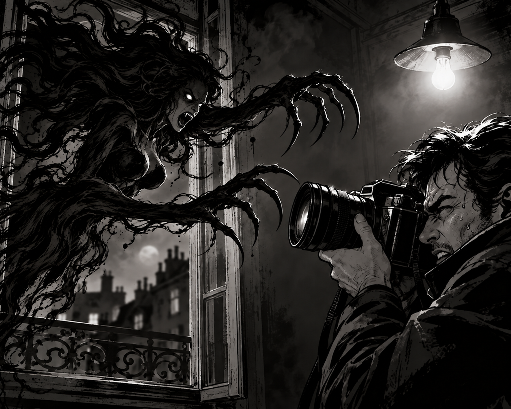

Mes jeux
- Reticuli
- Accessible Arena Strike
- Le tertre fistule
- Vous êtes ici : Vampire Photo
- Metropolis (à venir)

Présentation du jeu
Vampire Photo est un prototype de jeu vidéo sonore en temps réel, jouable au clavier, avec une ambiance d'horreur gothique.
Entre voyeurisme surnaturel et survie, il mêle écoute, sens du rythme et tension. Posté à une fenêtre, un photographe épie l'immeuble d'en face, où une vampire est perchée sur sa proie. Il doit réussir un cliché précis, où certains éléments doivent figurer, puis s'enfuir.
Chaque seconde passée à viser est une seconde de moins pour fuir.
Le projet met l’accent sur les sons, la stéréo, les annonces vocales et une interface graphique synthétique, afin de proposer une expérience accessible aussi bien aux joueurs voyants que non-voyants.
Lien itch.io
La page officielle du jeu sur itch.io sera indiquée ici.
Mode d'emploi
À venir…
Chronologie
- Mardi 29 septembre 2026 à 9 h 54 : début du projet Vampire Photo.
- Jeudi 1er octobre 2026 à 4 h 27 : validation de la planche de sprites.
- Lundi 5 octobre 2026 à 13 h 18 : première mouture validée.
- Vendredi 16 octobre 2026 à 00 h 16 : finalisation de la scène de fuite.